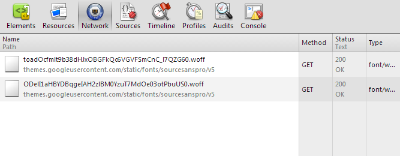

Veggies sunt bona vobis, proinde vos postulo esse magis azuki bean sweet pepper yarrow swiss chard kombu melon soybean bok choy epazote corn dandelion amaranth zucchini groundnut.

Google Fonts経由でSource Sans Proを400・400italic・700・700italicの4種類を呼んでいるが、Chrome 28では実際に使われている400と700以外へはHTTPリクエストが行われない。